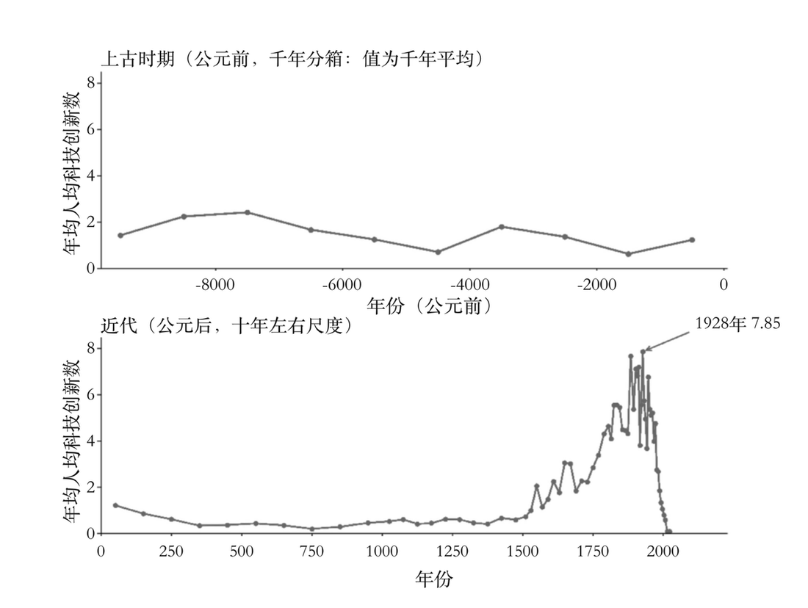

人口规模与科技创新

人口越多，重大创新就越多吗？人口规模与科技创新有什么关系？
人口越多，重大科技首创就越多吗？受教育者和科研人员不断增加，是否就能使重大突破持续加速？人口规模与创新的关系，既涉及创造者的数量，也涉及人类怎样把已有知识转化为新的发现。沿着这一问题，还可以进一步讨论：人口与经济增长在多大程度上由重大创新带动，广泛的日常改进又在其中发挥什么作用？
马尔萨斯关注人口增长对生活水平的压力，熊彼特强调企业家的创新怎样推动经济变化；索罗把技术进步引入经济增长分析，罗默进一步把知识生产放入增长机制之中。知识能够被不同的人反复利用，新知识又能为后来者提供创造条件，由此形成累积效应。这条思路也提出了一个值得检验的问题：知识生产者越来越多，重大科技成就的增长是否会相应加快？我们从长时段的重大首创与人口数据入手，考察这种规模关系。
作者与同事于2016年发表的研究，比较了过去一万年的科技成就与人口规模变化。人口数据采用Manning汇集的多个历史估计序列，科技数据来自我们的数据库。图I-8、图I-9已按2026年更新的成就数据重绘，用来观察人口规模与重大首创之间的历史相关关系。
图I-8 近万年年均人均（每10亿人）重大科技成就数的变化。上图为公元前的千年平均，下图为公元后数据，采用约十年尺度；两图时间分辨率不同。人口采用Manning（2008）所汇集12个数据源插值后的平均值，成就采用2026年更新的数据库。

图I-9 重大科技成就增长率与世界人口规模的散点图，人口横轴采用对数标尺。数据口径同图I-8。

在这一统计口径下，我们观察到几项值得讨论的现象。
图I-8显示，人均年均重大科技成就数在二十世纪二十年代前后达到高点，此后明显下降。也就是说，世界人口继续扩大，每十亿人每年产生的重大首创却减少了。更值得注意的是，过去百年各地的教育普及、科研人员规模、研究设施和资金投入大幅增长，创造知识所拥有的人力与物力条件远胜从前。这种投入扩张与人均重大首创下降的反差，正是我们研究中最值得追问的现象之一。
图I-9把这种变化放在人口规模上观察：世界人口较少的阶段，重大科技成就增长率与人口规模呈正相关；人口超过约20亿后的部分时段，两者转为负相关。人口扩大确实增加潜在创造者、市场与协作机会，但重大突破并未随人数增加而自动加速。从这一结果看，“人越多，好主意越多”的直觉需要进一步展开：“人海战术”可以扩大研究和改进活动，却难以保证重大首创按比例增长。问题的关键随之转向，什么样的知识积累、探索方式和组织环境，更有利于突破出现。
科研投入增加而突破相对减少，促使我们重新思考创新的投入方式。既有知识越来越复杂，进入前沿需要更长训练，研究又越来越依赖昂贵设备与多人协作；资源如何分配、是否容纳偏离主流的想法，也影响探索方向。作者更关心的是：不断扩大的科研体系，是否把足够的机会留给了能够开辟新路的问题。扩大投入与鼓励重大突破，需要在研究组织和评价机制中同时得到体现。
研究还观察到，在一些长时段中，重大科技成就增长的加速或放缓先于人口变化。这为作者的一个判断提供了线索：重大创新能够先打开新的生存与发展空间，人口和经济随后在这个空间中扩展。农业增加食物供给，医学与公共卫生减少死亡，动力与机器扩大生产能力，都体现出这种作用。人口增长又扩大市场、分工和知识交流，反过来支持创造。两者形成反馈，重大突破在其中具有开辟新路径的作用。
图I-10把人均年均重大科技首创数量与世界人口增长率放在同一时间轴上。前者在二十世纪前期达到高点，后者在二十世纪中期达到高点，两条曲线的先后变化使这种反馈更加直观。我们据此关注科技突破怎样改变人口增长的条件，也关注人口扩张为什么未能带来同样幅度的重大创新增长。结语将继续讨论人口年龄结构，以及中国、美国等地区未来的人口变化与科技趋势。
图I-10 人均年均重大科技首创数量（每10亿人）与世界人口增长率。基于2026年版“重大科技成就数据库”、Manning（2008）人口数据库及联合国人口数据计算；人口增长率经11年滑动平均平滑。

本文选自《欲望的力量：人类科技创新简史》（第二版）开篇“欲望与创新”——人口与科技创新：人口规模与科技创新。上一篇：三次科技革命：人类的三次科技大革命；下一篇：重大创新结构：人口规模与科技创新（续）；连载总索引见《欲望的力量》连载总索引。
本编其他连载：需求创新动力学：人类需求与科技创新的动力 · 科技六类价值：从需求看科技的六类价值 · 万年科技前沿：科技前沿演进的万年趋势 · 三次科技革命：人类的三次科技大革命 · 人口与科技创新：人口规模与科技创新